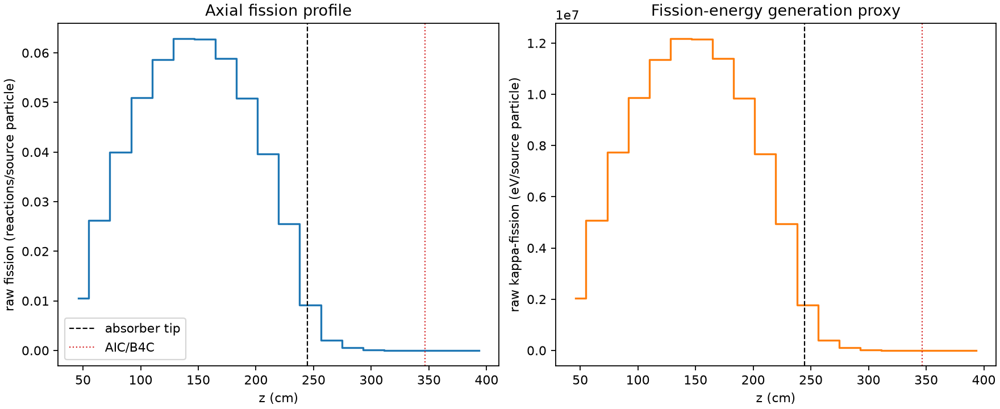
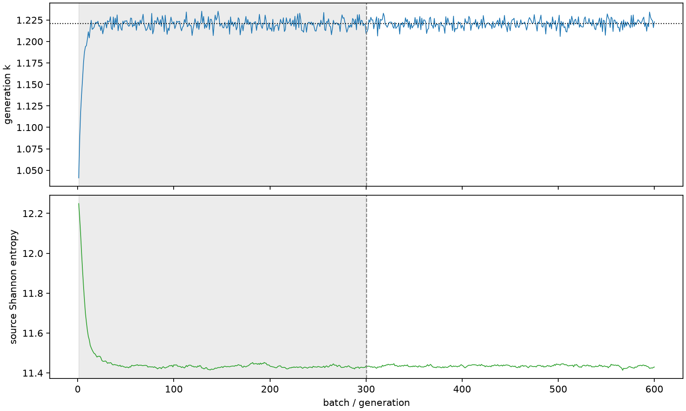

| field | value |
|---|---|
| experiment | V2-STAGE_32_OGRENCI_04-0004 |
| k | 1.2207923561876308 |
| MC standard error | 0.0001937748474977078 |
| seconds | 1305.9444641230002 |
| acceptance | not_assessed |
| convergence | review_required |
Completed is output integrity only; physical and statistical review required. Zero tallies do not prove zero production or zero uncertainty.
| diagnostic | value |
|---|---|
| geometric fuel voxels | 5280 |
| zero fission tally voxels | 310 |
| low signal fuel voxels | 1319 |
| low signal fission share | 0.00010017619921481614 |
| low signal kappa share | 0.00010020222432433271 |
| important fission share | 0.9500667153037653 |
| previous filter included | 3961 |
| duration estimate s | 1562.5173488400023 |
| actual minus estimate s | -256.5728847170021 |
| fission relative MC error | statistics |
|---|---|
| all_geometric_fuel | {"voxels": 5280, "positive_mean_voxels": 4970, "zero_mean_voxels": 310, "undefined_relative_error_voxels": 310, "median": 0.011520615113376792, "p95": 0.8324920803980059, "maximum": 1.0000000000000002} |
| low_signal | {"voxels": 1319, "positive_mean_voxels": 1009, "zero_mean_voxels": 310, "undefined_relative_error_voxels": 310, "median": 0.5177917424009811, "p95": 1.0, "maximum": 1.0000000000000002} |
| important_95pct | {"voxels": 2613, "positive_mean_voxels": 2613, "zero_mean_voxels": 0, "undefined_relative_error_voxels": 0, "median": 0.008051323721478803, "p95": 0.011534310957899745, "maximum": 0.013571285934490761} |
| outside_previous_filter | {"voxels": 1319, "positive_mean_voxels": 1009, "zero_mean_voxels": 310, "undefined_relative_error_voxels": 310, "median": 0.5177917424009811, "p95": 1.0, "maximum": 1.0000000000000002} |
| kappa_fission relative MC error | statistics |
|---|---|
| all_geometric_fuel | {"voxels": 5280, "positive_mean_voxels": 4970, "zero_mean_voxels": 310, "undefined_relative_error_voxels": 310, "median": 0.01150885360521245, "p95": 0.8319247440716228, "maximum": 1.0000000000000002} |
| low_signal | {"voxels": 1319, "positive_mean_voxels": 1009, "zero_mean_voxels": 310, "undefined_relative_error_voxels": 310, "median": 0.5166766062060515, "p95": 1.0, "maximum": 1.0000000000000002} |
| important_95pct | {"voxels": 2613, "positive_mean_voxels": 2613, "zero_mean_voxels": 0, "undefined_relative_error_voxels": 0, "median": 0.00804228360604855, "p95": 0.011521244421573418, "maximum": 0.013557347056810517} |
| outside_previous_filter | {"voxels": 1319, "positive_mean_voxels": 1009, "zero_mean_voxels": 310, "undefined_relative_error_voxels": 310, "median": 0.5166766062060515, "p95": 1.0, "maximum": 1.0000000000000002} |
| axial bin | fission share | kappa-fission share |
|---|---|---|
| 1 | 0.02110409713102269 | 0.021104988063853032 |
| 2 | 0.052528269546472946 | 0.05252805010048997 |
| 3 | 0.08017403808754145 | 0.08017374607200531 |
| 4 | 0.10214526954645177 | 0.10214474915265236 |
| 5 | 0.11754858936121446 | 0.11754803356342314 |
| 6 | 0.12602434645204524 | 0.12602367654513846 |
| 7 | 0.1258962125770426 | 0.12589543526822533 |
| 8 | 0.11796723503191629 | 0.11796655616620043 |
| 9 | 0.10210209155960967 | 0.10210154005812278 |
| 10 | 0.0794527737854518 | 0.0794523571968489 |
| 11 | 0.05117767014445423 | 0.05117749771878624 |
| 12 | 0.0183355753034892 | 0.01833784413176804 |
| 13 | 0.0040982578016144685 | 0.004099494179318154 |
| 14 | 0.0010638979225413702 | 0.0010642390546945412 |
| 15 | 0.00028205227797203317 | 0.00028214338983328685 |
| 16 | 7.320924494665383e-05 | 7.322909304440554e-05 |
| 17 | 2.1544653913289554e-05 | 2.154842242177284e-05 |
| 18 | 4.313901236983349e-06 | 4.315278737004584e-06 |
| 19 | 4.16428062253382e-07 | 4.1695761959703455e-07 |
| 20 | 1.3924300046079018e-07 | 1.3958681707126812e-07 |
Histories include the inactive-to-active transition at batch 300. kappa-fission approximates fission energy production, not total heat deposition.

